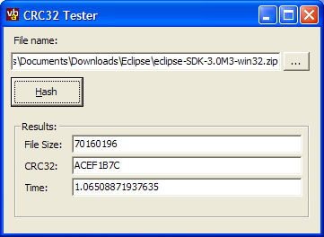

VB CRC32 (36K)
VB CRC32 (36K)
 23 Oct 2003
23 Oct 2003
First Posted
 Calculating CRC32 (and MDA5 and SHA-1) From .NET
Calculating CRC32 (and MDA5 and SHA-1) From .NET

Calculating CRC32 With VB
Demonstrates how to calculate CRC32 checksums using the same method as WinZip.
The CRC (Cyclic Redundancy Checksum) algorithm is a highly optimised and powerful way of checking whether a large number of bytes have been modified or not. The algorithm scans through all the bytes and generates a 32 bit number to represent the contents - small changes in the file contents result in large changes in the check sum, and there is a very low chance that two different streams of bytes will have the same CRC. This article provides a high performance class for generating a WinZip compatible CRC32 checksum in VB.
Calculating CRC32
The CRC32 algorithm is a reliable way of checking whether an error has occurred in a sequence of bytes. There are various means of checking whether any bytes have been corrupted, for example, checksums and parity bits, but many simple schemes run a reasonably high chance of failing to detect an error depending on the type of corruption to the data that occurs. With CRC the chances of a corruption occurring which results in the same CRC are extremely remote.
An excellent description of the algorithm, and the various optimisations you can apply when implementing it (a fascinating and heavily mathematical process) is provided in Donald Knuth's classic programming series "The Art of Programming". You can find some online information here, although these do not cover the optimisation tricks in much detail (if at all):
The implementation here uses a pre-calculated lookup table to do a lot of the heavy work of generating the polynomial. Once this has been calculated then the actual algorithm becomes relatively simple, although it still causes some problems in VB. Here I must say thanks to Paul for providing the simple and fast version of the code that's now posted:
Calculating The Lookup Table
Private crc32Table() As Long
Private Sub Class_initialize()
' This is the official polynomial used by CRC32 in PKZip.
' Often the polynomial is shown reversed (04C11DB7).
Dim dwPolynomial As Long
dwPolynomial = &HEDB88320
Dim i As Integer, j As Integer
ReDim crc32Table(256)
Dim dwCrc As Long
For i = 0 To 255
dwCrc = i
For j = 8 To 1 Step -1
If (dwCrc And 1) Then
dwCrc = ((dwCrc And &HFFFFFFFE) \ 2&) And &H7FFFFFFF
dwCrc = dwCrc Xor dwPolynomial
Else
dwCrc = ((dwCrc And &HFFFFFFFE) \ 2&) And &H7FFFFFFF
End If
Next j
crc32Table(i) = dwCrc
Next i
End Sub
The CRC32 Calculation
Dim crc32Result As Long
crc32Result = &HFFFFFFFF
Dim i As Integer
Dim iLookup As Integer
[For Each [Byte] in [Buffer]]
iLookup = (crc32Result And &HFF) Xor [Byte]
crc32Result = ((crc32Result And &HFFFFFF00) \ &H100) _
And 16777215 ' nasty shr 8 with vb :/
crc32Result = crc32Result Xor crc32Table(iLookup)
[Next]
Crc32 = Not (crc32Result)
The result is a pretty quick algorithm: calculating CRC32 for a 70Mb file on an Athlon XP2000 machine took just a little more than a second. This compares favourably with around 0.65s for the C# version also available on the site.
Using the Class
The class provided wraps the details of determining CRC32 for a file or for an array of bytes. If you want to calculate CRC32 for a file, then you must use the cBinaryFileStream class which is provided as a source of the file data. This wraps standard VB file reading techniques so that a binary file can be read in chunks, which simplifies the CRC32 algorithm whilst still providing good performance. To use the cBinaryFileStream class simply create a new instance and set the File property to the file you want to read. Then you pass it into the GetFileCRC32 method of the cCRC32 class:
Dim cStream As New cBinaryFileStream cStream.File = txtFileName.Text Dim cCRC32 As New cCRC32 Dim lCRC32 As Long lCRC32 = cCRC32.GetFileCrc32(cStream)
You can also calculate the CRC32 of a byte array using the GetByteArrayCRC32 method.
Conclusion
This article provides a high performance CRC32 implementation for VB which can calculate a WinZip compatible CRC32 for files and data in VB memory.